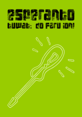
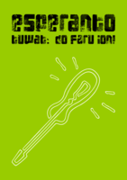

Ebligu JavaScript por montri la lingvoelektilon.
Ni estas la Esperanto-asembleo ĉe la Ĥaosa Komunikada Kongreso. La asembleo celas esti bazejo kaj renkontiĝloko por esperanto-parolantaj kongresanoj kaj informpunkto pri la lingvo mem.
La asembleo dum 35c3 troviĝas en halo 2, 20m ene de pordego 2.5. La fikslinea eventphone-telefono ĉe la asembleo estas atingebla per la nombro 3776 (ESPO).
35c3 DECT/VoIP: 3776 (ESPO)
Twitter: @c3esperanto
Ĥaoso Internacia means Chaos International and is pronounced like this:
The 35c3 assembly is located in hall 2, 20m inside of gate 2.5. The fixed-line eventphone at the assembly can be reached at the number 3776 (ESPO).
If you start learning before christmas, you'll be able to speak simple sentences at congress.
Our local mirror of "Esperanto in your pocket" is here: PDF
You need more information? Here you go.
35c3 DECT/VoIP: 3776 (ESPO)
Twitter: @c3esperanto
 
